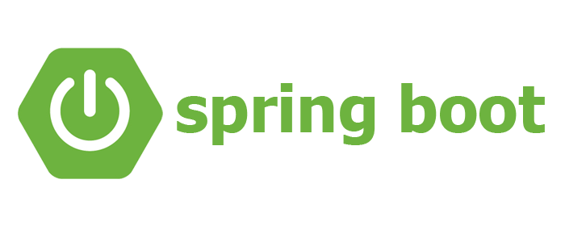

<!DOCTYPE html><html lang="kr"><head><meta charSet="utf-8"/><link rel="preconnect" href="/" crossorigin=""/><meta name="viewport" content="width=device-width, initial-scale=1"/><link rel="preload" as="image" href="/images/logo.svg"/><link rel="preload" as="image" href="./spring-springboot.png"/><link rel="preload" as="image" href="spring-springboot-1.png"/><link rel="preload" as="image" href="spring-springboot-2.png"/><link rel="preload" as="image" href="spring-springboot-3.png"/><link rel="stylesheet" href="/_next/static/css/b5b8005bf485ced7.css" data-precedence="next"/><link rel="stylesheet" href="/_next/static/css/00092d5ad1b87658.css" data-precedence="next"/><link rel="stylesheet" href="/_next/static/css/b2a4095017a7d650.css" data-precedence="next"/><link rel="stylesheet" href="/_next/static/css/ae4f66ea80ce106d.css" data-precedence="next"/><link rel="preload" href="/_next/static/chunks/webpack-72429840ff0ac4c7.js" as="script" fetchPriority="low"/><script src="/_next/static/chunks/fd9d1056-22249b5849022fd7.js" async=""></script><script src="/_next/static/chunks/864-70ebad4d880e1f3b.js" async=""></script><script src="/_next/static/chunks/main-app-33a23439339f035f.js" async=""></script><meta name="google-site-verification" content="bbZ2jHC5uGJy6gqrZ1mX7JzvXjvvvm4fsDuCMrmYhGw"/><title>[1] 스프링? 스프링 부트? 개념 정리 - Hibernation IT</title><meta name="description" content="스프링과 스프링 부트에 대해 천천히 개념 정리하며 공부하기 위한 포스팅입니다.   What is Spring?     1. 스프링이란?  ![image1](spr..."/><meta property="og:title" content="[1] 스프링? 스프링 부트? 개념 정리 - Hibernation IT"/><meta property="og:description" content="스프링과 스프링 부트에 대해 천천히 개념 정리하며 공부하기 위한 포스팅입니다.   What is Spring?     1. 스프링이란?  ![image1](spr..."/><meta property="og:image" content="https://hibernationit.github.io/blog/spring-springboot/spring-springboot.png"/><meta name="twitter:card" content="summary_large_image"/><meta name="twitter:title" content="[1] 스프링? 스프링 부트? 개념 정리 - Hibernation IT"/><meta name="twitter:description" content="스프링과 스프링 부트에 대해 천천히 개념 정리하며 공부하기 위한 포스팅입니다.   What is Spring?     1. 스프링이란?  ![image1](spr..."/><meta name="twitter:image" content="https://hibernationit.github.io/blog/spring-springboot/spring-springboot.png"/><link rel="icon" href="/favicon.ico" type="image/x-icon" sizes="32x32"/><meta name="next-size-adjust"/><script src="/_next/static/chunks/polyfills-c67a75d1b6f99dc8.js" noModule=""></script></head><body class="__className_6052f0"><main><header class="header_header__v3u3I"><a href="/"></a><ul><li><a href="/">Home</a></li><li><a href="/project/">Project</a></li><li><a href="/icon/">Icon</a></li><li><a href="/blog/">Blog</a></li><li><a href="/illust/">Illust</a></li><li><a href="/about/">About</a></li></ul></header><main class="page_main__a5wrv"><section class="page_header__nUMbM"><h3 class="page_dateBox__n4Pg_">2023년 04월 28일</h3><div class="page_title__rfBcm"><h1>[1] 스프링? 스프링 부트? 개념 정리</h1></div><div class="page_chips__hoyVa"><div class="page_tag__F_8df">Backend</div><div class="page_tag__F_8df">SpringBoot</div><div class="page_tag__F_8df">Java</div></div></section><section class="content_content__IJfBU"><p>스프링과 스프링 부트에 대해 천천히 개념 정리하며 공부하기 위한 포스팅입니다.</p>
<h1>What is Spring?</h1>
<hr/>
<h2>1. 스프링이란?</h2>
<p></p>
<h3>Spring?</h3>
<ul>
<li>자바 기반의 웹 어플리케이션을 만들 수 있는 **프레임 워크(Framework)**이다.<!-- -->
<ul>
<li>
<p>프레임워크에 대해 모르겠다면?</p>
<p><a href="https://hibernationit.github.io/blog/framework-library-module-package/">프레임워크, 라이브러리, 모듈, 패키지 개념 정리</a></p>
</li>
</ul>
</li>
</ul>
<h2>2. 스프링의 특징</h2>
<ol>
<li>자바 객체 &amp; 라이브러리의 관리가 편리하다.</li>
<li>WAS ( ex. Tomcat )가 내장되어 있다.</li>
<li>기존 웹 서버 개발에 필요한 코드 양에 비해 적은 코드를 가지고 만들 수 있다.</li>
<li><strong>IOC ( Inversion Of Control )</strong> 을 지원한다.<!-- -->
<ul>
<li>객체의 생성 &amp; 소멸을 스프링이 제어 → 생성된 객체를 스프링이 관리</li>
</ul>
</li>
<li><strong>DI ( Dependency Injection )</strong> 을 기반으로 작동한다.<!-- -->
<ul>
<li>객체를 외부에서 생성하여 사용하려는 객체에게 제공</li>
</ul>
</li>
</ol>
<h1>What is Spring Boot?</h1>
<hr/>
<h2>1. 스프링 부트란?</h2>
<p></p>
<h3>Spring Boot?</h3>
<ul>
<li><strong>스프링</strong> 을 더 쉽게 사용하기 위한 <strong>도구</strong> 이다.</li>
</ul>
<h3>Why use it?</h3>
<ul>
<li>기존 스프링의 경우, 처음 프로젝트 사용을 위한 <strong>기본 설정을 직접 진행한다</strong>.
→ Spring 의 많은 부분을 자동화 하여 <strong>비즈니스 부분에 집중</strong>하기 위해 사용한다.</li>
</ul>
<h1>Spring Modules</h1>
<hr/>
<p></p>
<h3>Spring 모듈 종류?</h3>
<ul>
<li>
<p>Data Access / Integration</p>
<p>데이터 통합 접근 관련 모듈</p>
</li>
<li>
<p>Web</p>
<p>웹 통신 모듈</p>
</li>
<li>
<p>AOP &amp; Aspects</p>
<p>AOP ( Aspect-Oriented Programing ):</p>
<p>핵심 로직을 포함하여 기능들을 분리하여 모듈화 하여 재사용할 수 있게 해주는 모듈</p>
<p>Aspects:</p>
<p>AOP의 기본 모듈로, 부가 기능을 정의한 코드와 정의한 코드를 어디에 적용할 지를 결정하는 포인트를 합친 개념</p>
</li>
<li>
<p>Instrumentation</p>
<p>JVM ( Java Vertual Machine )에 사용자 입력에 따른 서비스를 수행하는 프로그램을 추가하는 모듈</p>
</li>
<li>
<p>Messaging</p>
<p>메시지라는 개념 기반 애플리케이션을 작성할 수 있도록 도와주는 모듈</p>
</li>
<li>
<p>Core Container</p>
<p>스프링 프레임워크의 핵심인 빈(객체) 생명주기와 설정, 처리를 관리하는 컨테이너(모듈)</p>
</li>
<li>
<p>Test</p>
<p>테스트를 진행할 수 있도록 해주는 모듈</p>
</li>
</ul>
<p><em>잘못된 정보의 비판은 언제든 환영입니다.</em></p></section><section class="utterances_content__ybnoM"><h1>댓글</h1></section></main></main><script src="/_next/static/chunks/webpack-72429840ff0ac4c7.js" async=""></script><script>(self.__next_f=self.__next_f||[]).push([0])</script><script>self.__next_f.push([1,"1:HC[\"/\",\"\"]\n2:HL[\"/_next/static/css/b5b8005bf485ced7.css\",\"style\"]\n3:HL[\"/_next/static/css/00092d5ad1b87658.css\",\"style\"]\n0:\"$L4\"\n"])</script><script>self.__next_f.push([1,"5:HL[\"/_next/static/css/b2a4095017a7d650.css\",\"style\"]\n6:HL[\"/_next/static/css/ae4f66ea80ce106d.css\",\"style\"]\n"])</script><script>self.__next_f.push([1,"7:I{\"id\":6054,\"chunks\":[\"272:static/chunks/webpack-72429840ff0ac4c7.js\",\"971:static/chunks/fd9d1056-22249b5849022fd7.js\",\"864:static/chunks/864-70ebad4d880e1f3b.js\"],\"name\":\"\",\"async\":false}\n9:I{\"id\":1729,\"chunks\":[\"272:static/chunks/webpack-72429840ff0ac4c7.js\",\"971:static/chunks/fd9d1056-22249b5849022fd7.js\",\"864:static/chunks/864-70ebad4d880e1f3b.js\"],\"name\":\"\",\"async\":false}\na:I{\"id\":1443,\"chunks\":[\"272:static/chunks/webpack-72429840ff0ac4c7.js\",\"971:static/chunks/fd9d1056-22249b5849022fd7.js\",\"864:stat"])</script><script>self.__next_f.push([1,"ic/chunks/864-70ebad4d880e1f3b.js\"],\"name\":\"\",\"async\":false}\nb:I{\"id\":8639,\"chunks\":[\"272:static/chunks/webpack-72429840ff0ac4c7.js\",\"971:static/chunks/fd9d1056-22249b5849022fd7.js\",\"864:static/chunks/864-70ebad4d880e1f3b.js\"],\"name\":\"\",\"async\":false}\nc:I{\"id\":4724,\"chunks\":[\"724:static/chunks/724-f449ff28f8308514.js\",\"768:static/chunks/app/blog/layout-4dc1a42ae9ec178a.js\"],\"name\":\"\",\"async\":false}\ne:I{\"id\":2292,\"chunks\":[\"679:static/chunks/679-f36bb8c86fd749cf.js\",\"817:static/chunks/app/(page)/blog/[page]/"])</script><script>self.__next_f.push([1,"page-1312db4e40c8eb83.js\"],\"name\":\"\",\"async\":false}\n"])</script><script>self.__next_f.push([1,"4:[[[\"$\",\"link\",\"0\",{\"rel\":\"stylesheet\",\"href\":\"/_next/static/css/b5b8005bf485ced7.css\",\"precedence\":\"next\"}],[\"$\",\"link\",\"1\",{\"rel\":\"stylesheet\",\"href\":\"/_next/static/css/00092d5ad1b87658.css\",\"precedence\":\"next\"}]],[\"$\",\"$L7\",null,{\"buildId\":\"7VYN4WDG4qLMUsjeJ7o1X\",\"assetPrefix\":\"\",\"initialCanonicalUrl\":\"/blog/spring-springboot/\",\"initialTree\":[\"\",{\"children\":[\"(page)\",{\"children\":[\"blog\",{\"children\":[[\"page\",\"spring-springboot\",\"d\"],{\"children\":[\"__PAGE__?{\\\"page\\\":\\\"spring-springboot\\\"}\",{}]}]}]}]},\"$undefined\",\"$undefined\",true],\"initialHead\":[false,\"$L8\"],\"globalErrorComponent\":\"$9\",\"children\":[null,[\"$\",\"html\",null,{\"lang\":\"kr\",\"children\":[[\"$\",\"head\",null,{\"children\":[\"$\",\"meta\",null,{\"name\":\"google-site-verification\",\"content\":\"bbZ2jHC5uGJy6gqrZ1mX7JzvXjvvvm4fsDuCMrmYhGw\"}]}],[\"$\",\"body\",null,{\"className\":\"__className_6052f0\",\"children\":[\"$\",\"$La\",null,{\"parallelRouterKey\":\"children\",\"segmentPath\":[\"children\"],\"loading\":\"$undefined\",\"loadingStyles\":\"$undefined\",\"hasLoading\":false,\"error\":\"$undefined\",\"errorStyles\":\"$undefined\",\"template\":[\"$\",\"$Lb\",null,{}],\"templateStyles\":\"$undefined\",\"notFound\":[\"$\",\"main\",null,{\"className\":\"not-found_main__n9Ud9\",\"children\":[\"$\",\"section\",null,{\"className\":\"not-found_content__krn5k\",\"children\":[[\"$\",\"img\",null,{\"src\":\"/images/nodata.svg\",\"alt\":\"nodata\"}],[\"$\",\"h1\",null,{\"children\":\"404\"}],[\"$\",\"p\",null,{\"children\":\"페이지를 찾을 수 없어요!\"}],[\"$\",\"$Lc\",null,{\"href\":\"/\",\"children\":\"홈으로 돌아가기\"}]]}]}],\"notFoundStyles\":[[\"$\",\"link\",\"0\",{\"rel\":\"stylesheet\",\"href\":\"/_next/static/css/20747a49c70fc5b3.css\",\"precedence\":\"next\"}]],\"childProp\":{\"current\":[null,[\"$\",\"main\",null,{\"children\":[[\"$\",\"header\",null,{\"className\":\"header_header__v3u3I\",\"children\":[[\"$\",\"$Lc\",null,{\"href\":\"/\",\"children\":[\"$\",\"img\",null,{\"src\":\"/images/logo.svg\",\"alt\":\"logo\"}]}],[\"$\",\"ul\",null,{\"children\":[[\"$\",\"li\",\"0\",{\"children\":[\"$\",\"$Lc\",null,{\"className\":\"$undefined\",\"href\":\"/\",\"children\":\"Home\"}]}],[\"$\",\"li\",\"1\",{\"children\":[\"$\",\"$Lc\",null,{\"className\":\"$undefined\",\"href\":\"/project\",\"children\":\"Project\"}]}],[\"$\",\"li\",\"2\",{\"children\":[\"$\",\"$Lc\",null,{\"className\":\"$undefined\",\"href\":\"/icon\",\"children\":\"Icon\"}]}],[\"$\",\"li\",\"3\",{\"children\":[\"$\",\"$Lc\",null,{\"className\":\"$undefined\",\"href\":\"/blog\",\"children\":\"Blog\"}]}],[\"$\",\"li\",\"4\",{\"children\":[\"$\",\"$Lc\",null,{\"className\":\"$undefined\",\"href\":\"/illust\",\"children\":\"Illust\"}]}],[\"$\",\"li\",\"5\",{\"children\":[\"$\",\"$Lc\",null,{\"className\":\"$undefined\",\"href\":\"/about\",\"children\":\"About\"}]}]]}]]}],[\"$\",\"$La\",null,{\"parallelRouterKey\":\"children\",\"segmentPath\":[\"children\",\"(page)\",\"children\"],\"loading\":\"$undefined\",\"loadingStyles\":\"$undefined\",\"hasLoading\":false,\"error\":\"$undefined\",\"errorStyles\":\"$undefined\",\"template\":[\"$\",\"$Lb\",null,{}],\"templateStyles\":\"$undefined\",\"notFound\":\"$undefined\",\"notFoundStyles\":\"$undefined\",\"childProp\":{\"current\":[\"$\",\"$La\",null,{\"parallelRouterKey\":\"children\",\"segmentPath\":[\"children\",\"(page)\",\"children\",\"blog\",\"children\"],\"loading\":\"$undefined\",\"loadingStyles\":\"$undefined\",\"hasLoading\":false,\"error\":\"$undefined\",\"errorStyles\":\"$undefined\",\"template\":[\"$\",\"$Lb\",null,{}],\"templateStyles\":\"$undefined\",\"notFound\":\"$undefined\",\"notFoundStyles\":\"$undefined\",\"childProp\":{\"current\":[\"$\",\"$La\",null,{\"parallelRouterKey\":\"children\",\"segmentPath\":[\"children\",\"(page)\",\"children\",\"blog\",\"children\",[\"page\",\"spring-springboot\",\"d\"],\"children\"],\"loading\":\"$undefined\",\"loadingStyles\":\"$undefined\",\"hasLoading\":false,\"error\":\"$undefined\",\"errorStyles\":\"$undefined\",\"template\":[\"$\",\"$Lb\",null,{}],\"templateStyles\":\"$undefined\",\"notFound\":\"$undefined\",\"notFoundStyles\":\"$undefined\",\"childProp\":{\"current\":[\"$Ld\",[\"$\",\"main\",null,{\"className\":\"page_main__a5wrv\",\"children\":[[\"$\",\"section\",null,{\"className\":\"page_header__nUMbM\",\"children\":[[\"$\",\"img\",null,{\"className\":\"page_titleImg__oHqJB\",\"src\":\"./spring-springboot.png\",\"alt\":\"spring-springboot.png\"}],[\"$\",\"h3\",null,{\"className\":\"page_dateBox__n4Pg_\",\"children\":\"2023년 04월 28일\"}],[\"$\",\"div\",null,{\"className\":\"page_title__rfBcm\",\"children\":[\"$\",\"h1\",null,{\"children\":\"[1] 스프링? 스프링 부트? 개념 정리\"}]}],[\"$\",\"div\",null,{\"className\":\"page_chips__hoyVa\",\"children\":[[\"$\",\"div\",\"0\",{\"className\":\"page_tag__F_8df\",\"children\":\"Backend\"}],[\"$\",\"div\",\"1\",{\"className\":\"page_tag__F_8df\",\"children\":\"SpringBoot\"}],[\"$\",\"div\",\"2\",{\"className\":\"page_tag__F_8df\",\"children\":\"Java\"}]]}]]}],[\"$\",\"section\",null,{\"className\":\"content_content__IJfBU\",\"children\":[[\"$\",\"p\",\"p-0\",{\"children\":\"스프링과 스프링 부트에 대해 천천히 개념 정리하며 공부하기 위한 포스팅입니다.\"}],\"\\n\",[\"$\",\"h1\",\"h1-0\",{\"children\":\"What is Spring?\"}],\"\\n\",[\"$\",\"hr\",\"hr-0\",{}],\"\\n\",[\"$\",\"h2\",\"h2-0\",{\"children\":\"1. 스프링이란?\"}],\"\\n\",[\"$\",\"p\",\"p-1\",{\"children\":[\"$\",\"img\",null,{\"src\":\"spring-springboot-1.png\",\"alt\":\"image1\"}]}],\"\\n\",[\"$\",\"h3\",\"h3-0\",{\"children\":\"Spring?\"}],\"\\n\",[\"$\",\"ul\",\"ul-0\",{\"children\":[\"\\n\",[\"$\",\"li\",\"li-0\",{\"children\":[\"자바 기반의 웹 어플리케이션을 만들 수 있는 **프레임 워크(Framework)**\\b이다.\",\"\\n\",[\"$\",\"ul\",\"ul-0\",{\"children\":[\"\\n\",[\"$\",\"li\",\"li-0\",{\"children\":[\"\\n\",[\"$\",\"p\",\"p-0\",{\"children\":\"프레임워크에 대해 모르겠다면?\"}],\"\\n\",[\"$\",\"p\",\"p-1\",{\"children\":[\"$\",\"a\",\"a-0\",{\"href\":\"https://hibernationit.github.io/blog/framework-library-module-package/\",\"children\":\"프레임워크, 라이브러리, 모듈, 패키지 개념 정리\"}]}],\"\\n\"]}],\"\\n\"]}],\"\\n\"]}],\"\\n\"]}],\"\\n\",[\"$\",\"h2\",\"h2-1\",{\"children\":\"2. 스프링의 특징\"}],\"\\n\",[\"$\",\"ol\",\"ol-0\",{\"children\":[\"\\n\",[\"$\",\"li\",\"li-0\",{\"children\":\"자바 객체 \u0026 라이브러리의 관리가 편리하다.\"}],\"\\n\",[\"$\",\"li\",\"li-1\",{\"children\":\"WAS ( ex. Tomcat )가 내장되어 있다.\"}],\"\\n\",[\"$\",\"li\",\"li-2\",{\"children\":\"기존 웹 서버 개발에 필요한 코드 양에 비해 적은 코드를 가지고 만들 수 있다.\"}],\"\\n\",[\"$\",\"li\",\"li-3\",{\"children\":[[\"$\",\"strong\",\"strong-0\",{\"children\":\"IOC ( Inversion Of Control )\"}],\" 을 지원한다.\",\"\\n\",[\"$\",\"ul\",\"ul-0\",{\"children\":[\"\\n\",[\"$\",\"li\",\"li-0\",{\"children\":\"객체의 생성 \u0026 소멸을 스프링이 제어 → 생성된 객체를 스프링이 관리\"}],\"\\n\"]}],\"\\n\"]}],\"\\n\",[\"$\",\"li\",\"li-4\",{\"children\":[[\"$\",\"strong\",\"strong-0\",{\"children\":\"DI ( Dependency Injection )\"}],\" 을 기반으로 작동한다.\",\"\\n\",[\"$\",\"ul\",\"ul-0\",{\"children\":[\"\\n\",[\"$\",\"li\",\"li-0\",{\"children\":\"객체를 외부에서 생성하여 사용하려는 객체에게 제공\"}],\"\\n\"]}],\"\\n\"]}],\"\\n\"]}],\"\\n\",[\"$\",\"h1\",\"h1-1\",{\"children\":\"What is Spring Boot?\"}],\"\\n\",[\"$\",\"hr\",\"hr-1\",{}],\"\\n\",[\"$\",\"h2\",\"h2-2\",{\"children\":\"1. 스프링 부트란?\"}],\"\\n\",[\"$\",\"p\",\"p-2\",{\"children\":[\"$\",\"img\",null,{\"src\":\"spring-springboot-2.png\",\"alt\":\"image2\"}]}],\"\\n\",[\"$\",\"h3\",\"h3-1\",{\"children\":\"Spring Boot?\"}],\"\\n\",[\"$\",\"ul\",\"ul-1\",{\"children\":[\"\\n\",[\"$\",\"li\",\"li-0\",{\"children\":[[\"$\",\"strong\",\"strong-0\",{\"children\":\"스프링\"}],\" 을 더 쉽게 사용하기 위한 \",[\"$\",\"strong\",\"strong-1\",{\"children\":\"도구\"}],\" 이다.\"]}],\"\\n\"]}],\"\\n\",[\"$\",\"h3\",\"h3-2\",{\"children\":\"Why use it?\"}],\"\\n\",[\"$\",\"ul\",\"ul-2\",{\"children\":[\"\\n\",[\"$\",\"li\",\"li-0\",{\"children\":[\"기존 스프링의 경우, 처음 프로젝트 사용을 위한 \",[\"$\",\"strong\",\"strong-0\",{\"children\":\"기본 설정을 직접 진행한다\"}],\".\\n→ Spring 의 많은 부분을 자동화 하여 \",[\"$\",\"strong\",\"strong-1\",{\"children\":\"비즈니스 부분에 집중\"}],\"하기 위해 사용한다.\"]}],\"\\n\"]}],\"\\n\",[\"$\",\"h1\",\"h1-2\",{\"children\":\"Spring Modules\"}],\"\\n\",[\"$\",\"hr\",\"hr-2\",{}],\"\\n\",[\"$\",\"p\",\"p-3\",{\"children\":[\"$\",\"img\",null,{\"src\":\"spring-springboot-3.png\",\"alt\":\"image3\"}]}],\"\\n\",[\"$\",\"h3\",\"h3-3\",{\"children\":\"Spring 모듈 종류?\"}],\"\\n\",[\"$\",\"ul\",\"ul-3\",{\"children\":[\"\\n\",[\"$\",\"li\",\"li-0\",{\"children\":[\"\\n\",[\"$\",\"p\",\"p-0\",{\"children\":\"Data Access / Integration\"}],\"\\n\",[\"$\",\"p\",\"p-1\",{\"children\":\"데이터 통합 접근 관련 모듈\"}],\"\\n\"]}],\"\\n\",[\"$\",\"li\",\"li-1\",{\"children\":[\"\\n\",[\"$\",\"p\",\"p-0\",{\"children\":\"Web\"}],\"\\n\",[\"$\",\"p\",\"p-1\",{\"children\":\"웹 통신 모듈\"}],\"\\n\"]}],\"\\n\",[\"$\",\"li\",\"li-2\",{\"children\":[\"\\n\",[\"$\",\"p\",\"p-0\",{\"children\":\"AOP \u0026 Aspects\"}],\"\\n\",[\"$\",\"p\",\"p-1\",{\"children\":\"AOP ( Aspect-Oriented Programing ):\"}],\"\\n\",[\"$\",\"p\",\"p-2\",{\"children\":\"핵심 로직을 포함하여 기능들을 분리하여 모듈화 하여 재사용할 수 있게 해주는 모듈\"}],\"\\n\",[\"$\",\"p\",\"p-3\",{\"children\":\"Aspects:\"}],\"\\n\",[\"$\",\"p\",\"p-4\",{\"children\":\"AOP의 기본 모듈로, 부가 기능을 정의한 코드와 정의한 코드를 어디에 적용할 지를 결정하는 포인트를 합친 개념\"}],\"\\n\"]}],\"\\n\",[\"$\",\"li\",\"li-3\",{\"children\":[\"\\n\",[\"$\",\"p\",\"p-0\",{\"children\":\"Instrumentation\"}],\"\\n\",[\"$\",\"p\",\"p-1\",{\"children\":\"JVM ( Java Vertual Machine )에 사용자 입력에 따른 서비스를 수행하는 프로그램을 추가하는 모듈\"}],\"\\n\"]}],\"\\n\",[\"$\",\"li\",\"li-4\",{\"children\":[\"\\n\",[\"$\",\"p\",\"p-0\",{\"children\":\"Messaging\"}],\"\\n\",[\"$\",\"p\",\"p-1\",{\"children\":\"메시지라는 개념 기반 애플리케이션을 작성할 수 있도록 도와주는 모듈\"}],\"\\n\"]}],\"\\n\",[\"$\",\"li\",\"li-5\",{\"children\":[\"\\n\",[\"$\",\"p\",\"p-0\",{\"children\":\"Core Container\"}],\"\\n\",[\"$\",\"p\",\"p-1\",{\"children\":\"스프링 프레임워크의 핵심인 빈(객체) 생명주기와 설정, 처리를 관리하는 컨테이너(모듈)\"}],\"\\n\"]}],\"\\n\",[\"$\",\"li\",\"li-6\",{\"children\":[\"\\n\",[\"$\",\"p\",\"p-0\",{\"children\":\"Test\"}],\"\\n\",[\"$\",\"p\",\"p-1\",{\"children\":\"테스트를 진행할 수 있도록 해주는 모듈\"}],\"\\n\"]}],\"\\n\"]}],\"\\n\",[\"$\",\"p\",\"p-4\",{\"children\":[\"$\",\"em\",\"em-0\",{\"children\":\"잘못된 정보의 비판은 언제든 환영입니다.\"}]}]]}],[\"$\",\"$Le\",null,{}]]}],null],\"segment\":\"__PAGE__?{\\\"page\\\":\\\"spring-springboot\\\"}\"},\"styles\":[[\"$\",\"link\",\"0\",{\"rel\":\"stylesheet\",\"href\":\"/_next/static/css/ae4f66ea80ce106d.css\",\"precedence\":\"next\"}]]}],\"segment\":[\"page\",\"spring-springboot\",\"d\"]},\"styles\":[]}],\"segment\":\"blog\"},\"styles\":[]}]]}],null],\"segment\":\"(page)\"},\"styles\":[[\"$\",\"link\",\"0\",{\"rel\":\"stylesheet\",\"href\":\"/_next/static/css/b2a4095017a7d650.css\",\"precedence\":\"next\"}]]}]}]]}],null]}]]\n"])</script><script>self.__next_f.push([1,"8:[[\"$\",\"meta\",\"0\",{\"charSet\":\"utf-8\"}],[\"$\",\"title\",\"1\",{\"children\":\"[1] 스프링? 스프링 부트? 개념 정리 - Hibernation IT\"}],[\"$\",\"meta\",\"2\",{\"name\":\"description\",\"content\":\"스프링과 스프링 부트에 대해 천천히 개념 정리하며 공부하기 위한 포스팅입니다.   What is Spring?     1. 스프링이란?  ![image1](spr...\"}],[\"$\",\"meta\",\"3\",{\"name\":\"viewport\",\"content\":\"width=device-width, initial-scale=1\"}],[\"$\",\"meta\",\"4\",{\"property\":\"og:title\",\"content\":\"[1] 스프링? 스프링 부트? 개념 정리 - Hibernation IT\"}],[\"$\",\"meta\",\"5\",{\"property\":\"og:description\",\"content\":\"스프링과 스프링 부트에 대해 천천히 개념 정리하며 공부하기 위한 포스팅입니다.   What is Spring?     1. 스프링이란?  </script><script>self.__next_f.push([1,"d:null\n"])</script></body></html>